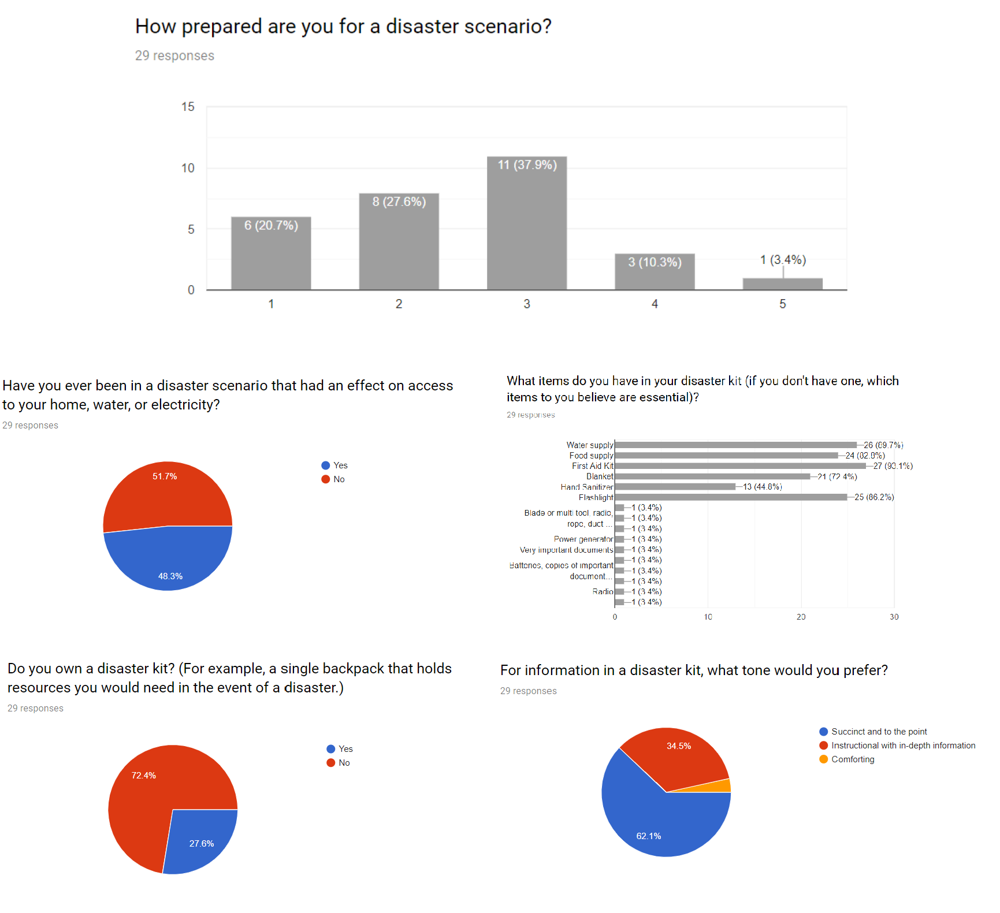
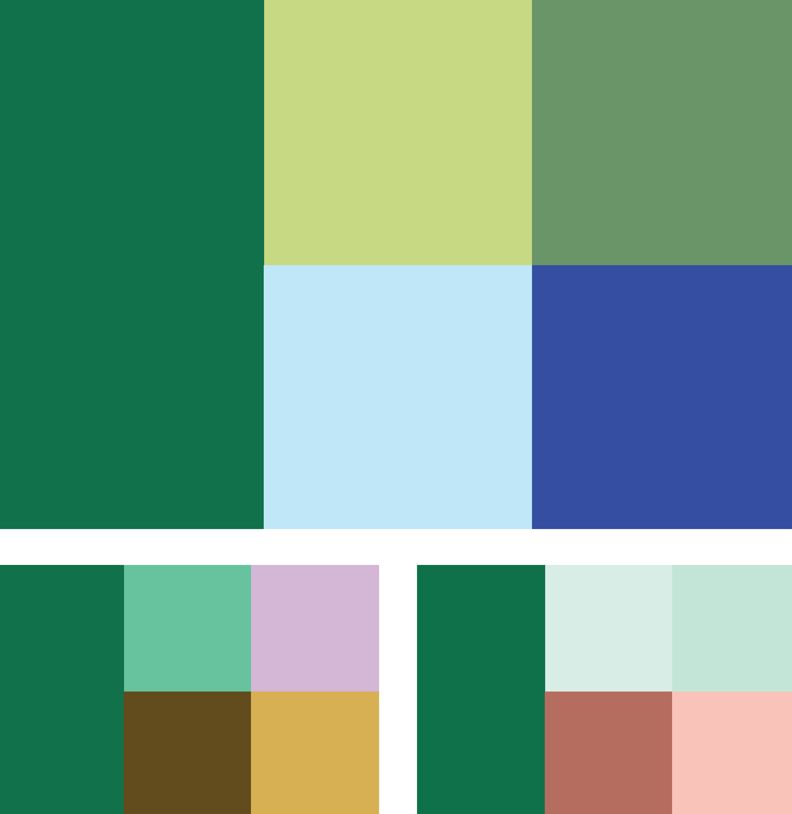
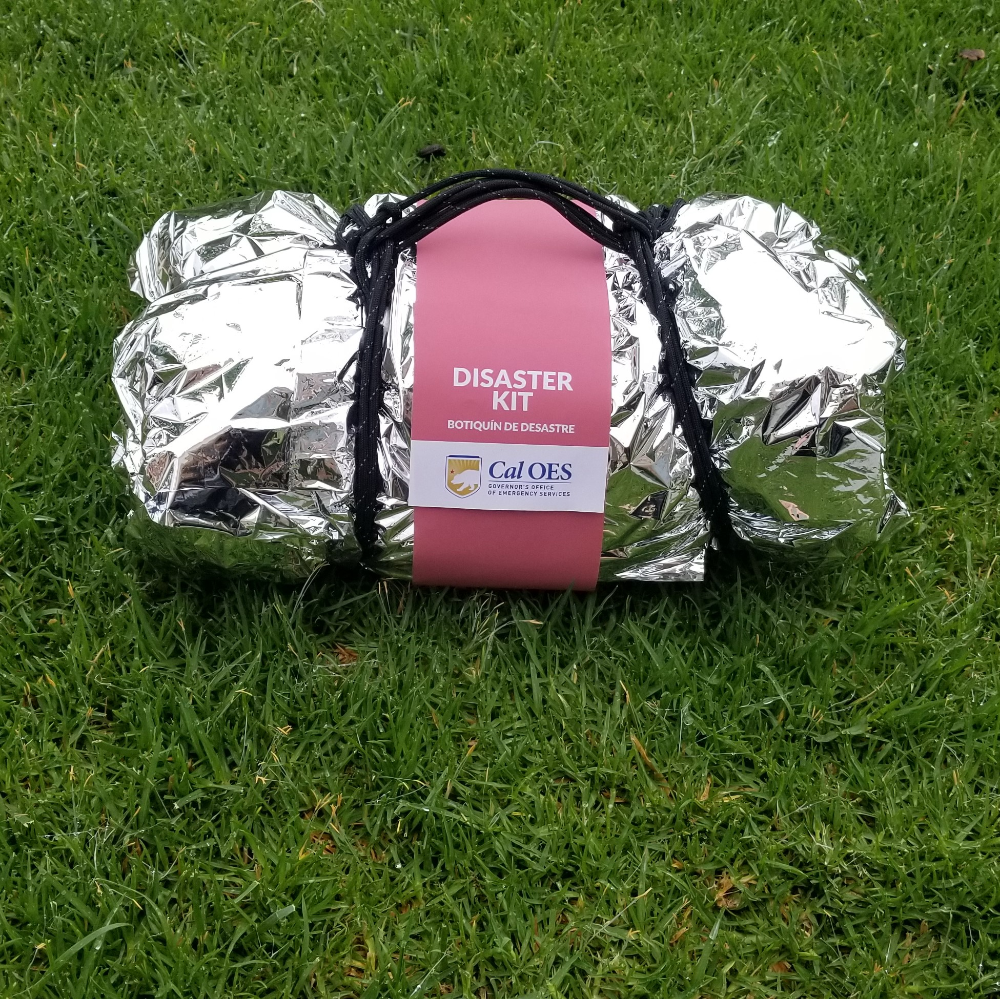

packaging
Disaster Kit
In the event of a disaster, access to homes, running water, or food can be scarce. A disaster may refer to a natural disaster such as an earthquake or a hurricane or a man-made disaster like a terrorist attack. In Southern California, earthquakes are a common natural disaster and the “Big One,” an 8+ magnitude earthquake along the San Andreas Faultline, is predicted to occur at any moment. People need to have an emergency kit ready ahead of time to ensure that they have necessary recourses.
Project Goals
The goal is to create a disaster kit that will be issued by the California Governor’s Office of Emergency Services after an emergency. It must include a 3-day supply of food and water, a flashlight with batteries, hand sanitizer, first aid supplies, and an emergency mylar blanket. In addition, the products should be branding to appear cohesive and trustworthy, especially with the inclunsion of the California OES logo.
All items will be combined into a packaging solution that must survive at least a 2-story drop. This will allow the kit to be quickly delivered without a concern for damage.
Solution

KIT PACKAGING The disaster kit package is simply a blanket with all the items wrapped inside. It is tied tight with paracord with a label wrapped around it.

DAILY RATIONS The food and water supply are rationed out and grouped together based on days. The packaging is a simple pouch made from a towel.

PACKAGING REDESIGN The items inside of the disaster kit were redesign to follow the same theme. All packages keep to a strict color palette of colors that are meant to be relaxing and incorporate the California Governor’s Office of Emergency Services logo.

INFORMATIONAL PACKET Almost every part of the disaster kit can be used for more than one purpose. The information kit describes different uses for each item. It is double sided, one side in English and the other in Spanish, and is held together on a keyring. (Sources: 1, 2, 3)
Description
The packaging solution is simple. The products are rolled into a blanket for padding, rolled with an emergency blanket to protect it from dirt, and tied off with paracord. Rolling the items is a simple way to protect them from impact, the elements, and any dirt or dust. In addition, the paracord acts as a handle but the small package could be placed inside or attached to the outside of a backpack. Because a blanket has a flexibile form, this also allows for users to add any other supplies they may need without worrying about running out of space.
The main goal of the packaging is to minimize the mental effort required by a user of the product. The food and water is neatly rationed out into three separate days and kept in pouches. This means that a person won’t have to calculate how much they would need to eat or drink each day and they have or struggle to remember if they have consumed their supply that day or not. In addition, the packaging is created out of the material of a towel so it can be reused as a pouch, a wash cloth, etc. after the food and water have been eaten.
The color palette is also intended to reduce stress in the person using it. Colors that can help a person relax include blue, violet, pink, green, and gray, according to Rebecca Soskin. This source also includes reccomended color palettes for each of these and all are fairly muted. The final color palette mainly uses green and blue. In color psychology, blue gives a sense of calm, serenity, and trust, while green expresses harmony, balance, and peace (source). In addition, the colors are found in nature, giving ideas of survival and they also match with products that had a set color already (the green blanket and the blue flashlight). The only exception to these points is red, which is used because it is universally recognized as the color of first aid, but the specific red chosen is desasturated to keep the muted theme used for calming colors.
To further develop trust in the product, along with using the California OES logo, the packaging is kept consistent with the surfaces being split between a white and a colored background. This brings higher contrast and therefore greater attention to the main identifiying features of the items such as the cross for the first aid kit or the title for packages like “EMERGENCY FOOD.” This also gives color a role in identifying the items. Food and water are grouped together with the light blue color, first aid uses red, hand sanitizer uses blue (the same color as the flashlight), and the information uses green. This means that although the color palette is cohesive, the products are visually separated into different categories.
Research

Moodboard The moodboard looks at 4 disasters from around the world: 2010 Haiti Earthquake, Hurricane Katrina, 2011 Tōhoku earthquake and tsunami, and the 2001 Gujarat earthquake. The moodboard shows how devasting disasters can get and why a person might have little access to food, shelter, and water. It also shows disaster kits that were sent during recovery, disaster kits that were made as a result, or other ways that resources such as water were obtained.

Survey A survey was sent out to 29 respondents. It gave insights into how prepared people were for a natural disaster, what information they might need when dealing with this disaster kit, and what additional items should be added to improve it.
Survey Questions:
- Have you ever been in a disaster scenario that had an effect on access to your home, water, or electricity?
- Do you own a disaster kit?
- How prepared are you for a disaster scenario?
- What items do you have in your disaster kit (if you don’t have one, which items to you believe are essential)?
- For information in a disaster kit, what tone would you prefer?
- What information would you need post-disaster?
- If you have ever been in a disaster scenario or know someone who has, please share any thoughts or advice you have from the experience.

Color Exploration The goal was to create a color palette that was calming. The starting point for the palette was the dark green of the blanket, to ensure that the designs visually matched with it.
